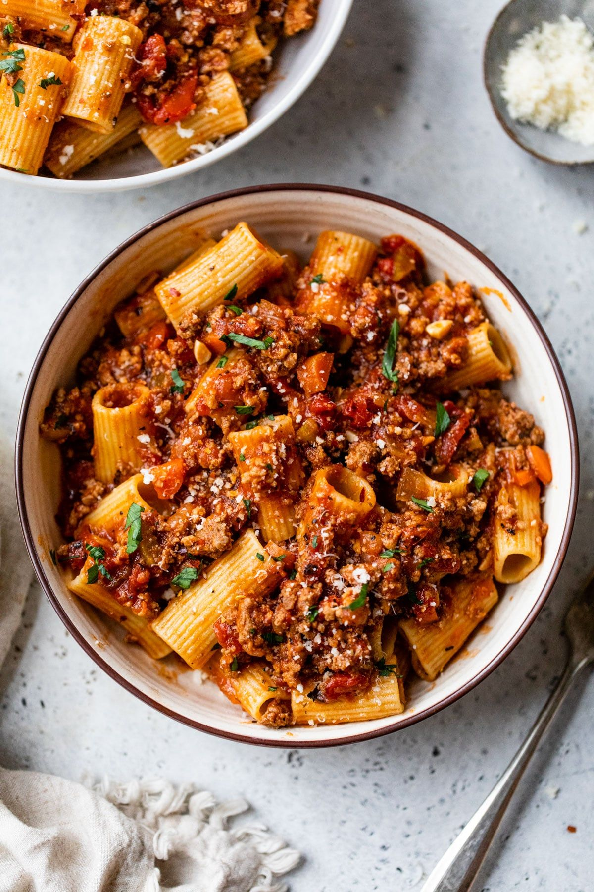

Bolognese

Description
This classic bolognese is rich, hearty, and packed with comforting flavours.
Slow-simmered with minced beef, tomatoes, and aromatic herbs, it creates a deliciously savoury sauce perfect for pasta.
Ideal for weeknight dinners or meal prep, this homemade bolognese is simple to make, satisfying to eat,
and taste even better the next day as the flavours continue to develop.
Just like Nonna's homemade bolognese
Ingredients
- Olive Oil
- Onion
- Garlic
- Celery
- Carrot
- Ground Beef
- Cherry Tomatoes
- Parsley
- Basil
- Black Pepper
- Rigatoni
- Parmesan
Steps
- Heat olive oil in a large skillet over medium heat.
- Add the onion and garlic and sauté until soft, about 8 minutes.
- Add the celery and carrot, then sauté for another 5 minutes.
- Increase heat to high and add the ground beef.
- Cook the beef, stirring frequently and breaking up lumps, until no longer pink, about 10 minutes.
- Add the tomatoes, parsley, and basil.
- Reduce heat to medium-low and cook until the sauce thickens, around 30 minutes.
- Season with salt and pepper to taste.
- Finish the bolognese with Pecorino Romano cheese.
- Meanwhile, bring a large pot of water to a boil over high heat.
- Season the water generously with kosher salt.
- Add the pasta and cook for 2 minutes less than package instructions, about 8–9 minutes.
- Using tongs, transfer the pasta directly from the water into the sauce.
- Serve with a drizzle of olive oil and extra cheese if desired.
Home